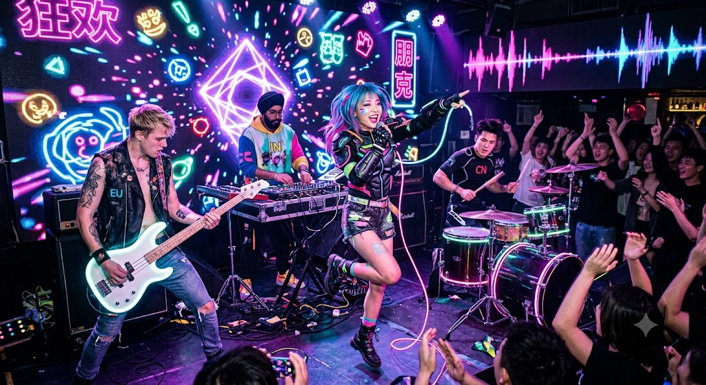
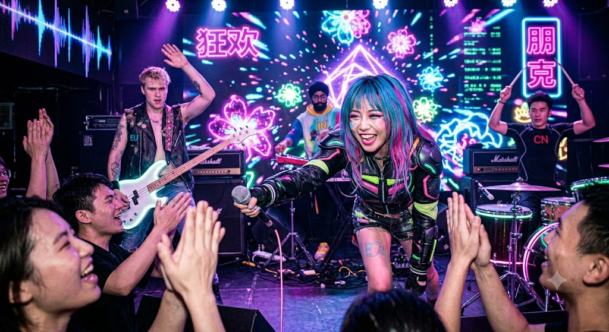

Designed Live-First for the Chinese Underground Scene
The core identity of this project is physical catharsis disguised as an interactive cartoon. It strips away the dark, self-destructive tropes of traditional punk and replaces them with an infectious, high-energy, inclusive space where the boundary between the stage and the audience completely melts away.

🎵 The Sonic Identity: Live-First Simplicity
The music is engineered from day one for the live environment—every riff, beat, and breakdown is designed to make bodies move.
- The Foundation: Stripped-down, relentless, fast-paced punk rock. It channels the legendary simplicity of The Ramones (Blitzkrieg Bop, Beat on the Brat). Short, punchy songs that require zero homework to love.
- The Local Flavor: A distinctly Chinese identity woven naturally into the raw punk energy. It utilizes electronic elements and organic samplings of traditional Chinese music, creating a familiar yet hyper-modern sonic landscape for local youth.
- The Complexity: Like The Simpsons or Futurama, the music is instantly friendly and digestible on the surface, yet structurally tight and cleverly executed underneath.

👥 The Roster & Visual Aesthetic
The band looks less like a traditional rock group and more like a high-contrast, premium character roster from games like League of Legends.
The Centerpiece (The Frontwoman): A charismatic, beautiful female lead singer who commands 100% of the room's attention. She is the anchor of the show.
The Elite Hype Squad: A highly stylized, international lineup that frames her perfectly:
The Drummer: Chinese (rooting the core rhythm locally).
The Bassist: European.
The Sample Machine: Indian (manipulating the electronic and cultural loops).
The Look: Bright, vibrant, and iconically uniform. It bridges the gap between high-end video game character designs and practical, raw punk streetwear.
🏟️ The Live Experience: Disney Meets Stadium Rock
Walking into the livehouse doesn't feel like entering a moody underground club; it feels like stepping into a space where you are required to participate.
- The Vibe: Pure, un-cynical spectacle, mirroring the infectious joy and theatrical pacing of Disney’s Festival of the Lion King.
- The Interaction: Driven by Freddie Mercury-style crowd command. The band relies heavily on heavy, physical, stadium-level interactions—like Queen’s iconic "We Will Rock You" stomp-and-clap beats—turning the entire audience into a unified, jumping instrument.
🖥️ The Production: The Living Stage
To ground the gaming and cartoon aesthetic, the live production utilizes cutting-edge, real-time visuals.
- Interactive OpenGL Backgrounds: The stage backdrop isn't a static loop or pre-rendered video. It consists of live, reactive animations parameterized directly to the frequencies and triggers of the instruments.
- The Result: When the band plays, the room breathes with them. Every snare hit, bass drop, and vocal peak visually warps the environment, making the livehouse feel like a living, breathing video game final.
Home PageThe Verdict: By combining the raw, undeniable physical energy of '77 punk with a bright gaming aesthetic, localized Chinese sampling, and an aggressive focus on crowd participation, this band is built to become an absolute powerhouse in the livehouse circuit. It is simple, massive, and pure fun.